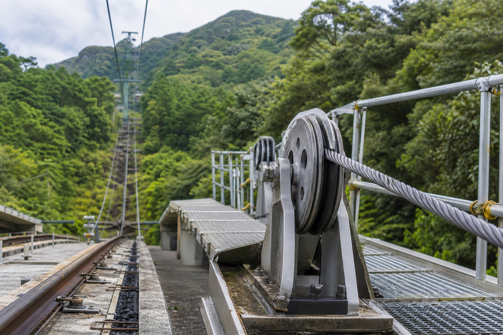

始業前点検
毎朝、制動試験、非常停止、ドア閉扉、車内放送、軌道内目視を確認します。
SAFETY AND MAINTENANCE / CBL-0209
車両、制動装置、ワイヤーロープ、駅放送設備の点検について公開しています。

毎朝、制動試験、非常停止、ドア閉扉、車内放送、軌道内目視を確認します。
巻上機、通信設備、山上駅の到着チャイム、非常電話の動作を記録します。
旅客運行終了後に実施します。点検番号が欠番の場合、翌朝の確認票に追記されます。
06/18の山上駅放送設備点検では、到着チャイムの試験鳴動を行います。周辺で音が聞こえる場合がありますが、車両の旅客運行はありません。